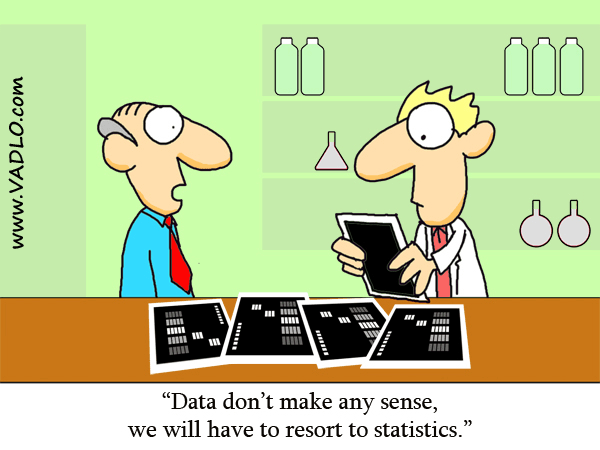
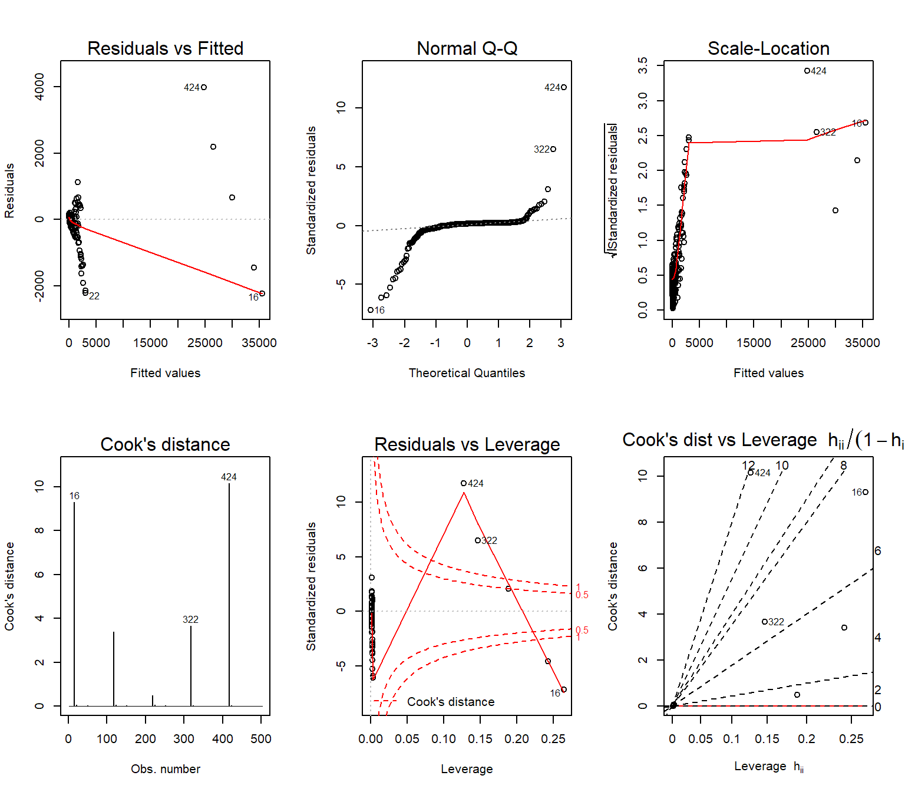

R Workshop: Module 5 (1)
Bobae Kang
April 18, 2018

This page contains the notes for the first part of R Workshop Module 5: Statistical modeling with R, which is part of the R Workshop series prepared by ICJIA Research Analyst Bobae Kang to enable and encourage ICJIA researchers to take advantage of R, a statistical programming language that is one of the most powerful modern research tools.
Links
Click here to go to the workshop home page.
Click here to go to the workshop Modules page.
Click here to view the accompanying slides for Module 5, Part 1.
Navigate to the other workshop materials:
Statistical modleing with R (1): Basics of statistical modeling
R is first designed as a programming language and an environment for statistics and data analysis. Accordingly, R provides as part of its base packages a host of handy tools for conducting statistical analysis. This part introduces the basics of descriptive and inferential statistics in R and touches on fitting linear and generalized linear models.
Basic Descriptive Statistics
Source: Vadlo.com
Quick summary stats
summary(data)The Base R summary() function is a quick way to get descriptive statistics on each columan of a tabular data object.
For numerical columns, we get the minimum, 1st quartile, median, mean, 3rd quartie and maximum values, as well as the count of missing value (NA).
For categorical variables (e.g. factor), we can the count for each level as well as the missing value (NA).
summary() is also used to get the “summary” of a fitted model object (e.g. lm) as well, as we will see shortly.
Example
Let’s take a look at summary of the ispcrime dataset.
summary(ispcrime)## year county violentCrime murder
## Min. :2011 Adams : 5 Min. : 0 Min. : 0.000
## 1st Qu.:2012 Alexander: 5 1st Qu.: 19 1st Qu.: 0.000
## Median :2013 Bond : 5 Median : 42 Median : 0.000
## Mean :2013 Boone : 5 Mean : 501 Mean : 7.026
## 3rd Qu.:2014 Brown : 5 3rd Qu.: 133 3rd Qu.: 1.000
## Max. :2015 Bureau : 5 Max. :33348 Max. :566.000
## (Other) :480 NA's :7 NA's :7
## rape robbery aggAssault propertyCrime
## Min. : 0.00 Min. : 0.0 Min. : 0.0 Min. : 0
## 1st Qu.: 1.00 1st Qu.: 0.0 1st Qu.: 15.0 1st Qu.: 133
## Median : 6.00 Median : 2.0 Median : 33.0 Median : 349
## Mean : 41.29 Mean : 172.3 Mean : 280.4 Mean : 2913
## 3rd Qu.: 22.00 3rd Qu.: 13.0 3rd Qu.: 102.0 3rd Qu.: 1190
## Max. :1986.00 Max. :16095.0 Max. :15129.0 Max. :178902
## NA's :7 NA's :7 NA's :7 NA's :7
## burglary larcenyTft MVTft arson
## Min. : 0.0 Min. : 0.0 Min. : 0.0 Min. : 0.00
## 1st Qu.: 35.5 1st Qu.: 85.5 1st Qu.: 3.0 1st Qu.: 1.00
## Median : 79.0 Median : 258.0 Median : 10.0 Median : 2.00
## Mean : 589.3 Mean : 2084.9 Mean : 215.2 Mean : 23.45
## 3rd Qu.: 268.0 3rd Qu.: 852.0 3rd Qu.: 30.0 3rd Qu.: 8.50
## Max. :38485.0 Max. :116145.0 Max. :22879.0 Max. :1418.00
## NA's :7 NA's :7 NA's :7 NA's :7Numerical variables
A distribution of numerical values can be described using statistics on the following characteristics:
- Central tendency
- Variability
- Shape
- Outliers
In the following, we will briefly discuss what each of these characteristics means and how we can get relevant statistics in R.
Central tendency
In statistics, central tendency is concerned with the “center” of a distribution. The following three are the common measures of central tendency:
- “mean” for the arithmetic mean
- “median” for the 50th percentile
- “mode” for the most frequent value
R has built-in functions for the first two: mean() and median(). Unfortunately, there is no native R function for mode. However, it is possible to create a custom function using the definition, i.e. the most frequnt value. Also, check out the modeest package that offers mode estimators.
Let us try using mean() and median() for the violentCrime column. And the result is …
mean(ispcrime$violentCrime)## [1] NAmedian(ispcrime$violentCrime)## [1] NA… wait, what? We get NA for both values.
This is because NA in R is a “contagious” value, making any operation with missing values return NA. To remedy this, we can use the na.rm argument, which takes a boolean input to control weather whether NA values are removed/excluded in calculation. The default is na.rm = FALSE
We try again with na.rm = TRUE:
mean(ispcrime$violentCrime, na.rm = TRUE)## [1] 500.9702median(ispcrime$violentCrime, na.rm = TRUE)## [1] 42Variability
Variability (or dispersion) in statistics is concerned with the extent to which a distribution is spreaded out.
There exist various measures for variability and R has built-in functions for many of them:
- range:
min(),max(),range() - percentiles:
fivenum(),IQR(),quantile() - variance:
var(),sd()
Range
Range is the interval between the minium nad maximum values. R offers min for getting the minimum value, max() for the maximum value, and range() for the range. Each of functions has the na.rm argument, so make sure change its input as needed.
min(ispcrime$violentCrime, na.rm = TRUE)## [1] 0max(ispcrime$violentCrime, na.rm = TRUE)## [1] 33348range(ispcrime$violentCrime, na.rm = TRUE)## [1] 0 33348Percentiles
R has a few useful functions to inspect the distribution of numerical data in terms of percentiles.
The fivenum() function returns what is called Tukey’s five number summary (minumum, 1st quartile, median, 3rd qurtile, maximum) for the input data. IQR() returns the inter-quartile range, which is the difference between the 1st quartile (25%) and 3rd quartile (75%).
The following shows the outputs of these functions using violentCrime as the input:
fivenum(ispcrime$violentCrime, na.rm = TRUE)## [1] 0 19 42 133 33348IQR(ispcrime$violentCrime, na.rm = TRUE)## [1] 114quntile() is a somewhat more flexible function. The default setting output of quantile() is equal to fivenum() output. However, quantile() can use probs arugment to get more flexible output.
# default: equal to fivenum()
quantile(ispcrime$violentCrime, probs = seq(0, 1, 0.25), na.rm = TRUE)## 0% 25% 50% 75% 100%
## 0 19 42 133 33348quantile(ispcrime$violentCrime, probs = seq(0, 1, 0.1), na.rm = TRUE)## 0% 10% 20% 30% 40% 50% 60% 70% 80%
## 0.0 5.0 13.0 24.0 32.0 42.0 57.0 90.0 246.2
## 90% 100%
## 668.4 33348.0Variance
The R function for variance is var(), which returns the sample variance of the given data: \[s^2 = (\sum{x - \bar{x}}^2)/(n-1)\]
var(ispcrime$violentCrime, na.rm = TRUE)## [1] 9463013Similarly, sd() returns the standard deviation of the given data: \[s = \sqrt{(\sum{x - \bar{x}}^2)/(n-1)}\]
sd(ispcrime$violentCrime, na.rm = TRUE)## [1] 3076.201Note that var() returns a covariance matrix when multiple variables are given as its input. In such cases, another function named cov() can be used instead for clarity; however, cov() has no na.rm argument to handle missing values.
variables <- ispcrime %>% select(violentCrime, propertyCrime)
var(variables, na.rm = TRUE)## violentCrime propertyCrime
## violentCrime 9463013 46803865
## propertyCrime 46803865 234761775Shape
The skewness and kurtosis (fatness/thinness) of a distribution are called the “shape” of the distribution.
While base R has no functions to get these statistics (which are rarely used for common descriptive statistics anyway), the moments package offers the following functions to meaasure the shape of a distribution:
skewness()kurtosis()
See moments package’s reference manual to find out more.
Outliers
Outliers are observations or data points that are far from most other observations and disproportinately affect key summary statistics
The outliers package offers useful functions to detect and measure outliers in data. See outliers package’s reference manual to learn more.
Categorical variables
Inspecting the distribution of a categorical variable requires a different set of tools. Frequency table is one of the most common ways to summarize the distribution of a catagorical variable.
In R, frequency tables can be made using table functions. We will take a look at the following:
table()for generating frequency tablesprop.table()for tables of proportionsxtabs()for creating frequency tables using formulaftable()for creating “flat” contingency tables
Table functions
table(...)
prop.table(x, margin = NULL)
ftable(x)
xtabs(formula, data, ...)table() takes one or more data vectors of same length. Each input data can be named like in the case of creating a list or a data.frame object. We can use as.data.frame() to turn a table into a data frame.
Both prop.table() and ftable() takes a table object. prop.table() returns a table in terms of proportion, where \(0 \leq p \leq 1\) for each value. ftable() returns a flat contingency table. We will shorty see what this means with an example below.
Finally, xtabs use formula to generate a frequency table. If a data frame is provided as the data input, its column names can be used directly in formula.
table() example
First, let us create a data to use for creating tables:
my_data <- ispcrime %>%
left_join(regions) %>%
select(
region,
viol = violentCrime,
prop = propertyCrime
) %>%
mutate(
high_viol = ifelse(viol > mean(viol, na.rm = TRUE), 1, 0),
high_prop = ifelse(prop > mean(prop, na.rm = TRUE), 1, 0)
)## Joining, by = "county"Now, we create a table object with two dimensions: region for regions in the state, and hviol for the greater-than-average violent crime count.
my_tbl <- table(
region = my_data$region,
hviol = my_data$high_viol
)Now we print the table.
my_tbl## hviol
## region 0 1
## Central 206 24
## Cook 0 5
## Northern 60 25
## Southern 175 8We can turn it into a data.frame, which can be more easily manipulated.
as.data.frame(my_tbl)## region hviol Freq
## 1 Central 0 206
## 2 Cook 0 0
## 3 Northern 0 60
## 4 Southern 0 175
## 5 Central 1 24
## 6 Cook 1 5
## 7 Northern 1 25
## 8 Southern 1 8prop.table() example
prop.table() has a margin argument to control how to generate margin for. magin takes an index, or vector of indices as an input. Take a look at the following examples to see how margin argument works:
prop.table(my_tbl, 1) # each row adds up to 1 ## hviol
## region 0 1
## Central 0.89565217 0.10434783
## Cook 0.00000000 1.00000000
## Northern 0.70588235 0.29411765
## Southern 0.95628415 0.04371585prop.table(my_tbl, 2) # each column adds up to 1## hviol
## region 0 1
## Central 0.46712018 0.38709677
## Cook 0.00000000 0.08064516
## Northern 0.13605442 0.40322581
## Southern 0.39682540 0.12903226If margin input is , each cell is x/sum(x).
ftable() example
To better illustrate what ftable() does, we first create a table with three dimensions. This is becuase using ftable() for a table of 2 dimensions or less makes little difference.
my_tbl2 <- table(
region = my_data$region,
hviol = my_data$high_viol,
hprop = my_data$high_prop
)Now, we first see the ftable() output.
# with ftable
ftable(my_tbl2)## hprop 0 1
## region hviol
## Central 0 197 9
## 1 1 23
## Cook 0 0 0
## 1 0 5
## Northern 0 55 5
## 1 0 25
## Southern 0 173 2
## 1 0 8Then compare it to the default printing otuput.
# without ftable
my_tbl2## , , hprop = 0
##
## hviol
## region 0 1
## Central 197 1
## Cook 0 0
## Northern 55 0
## Southern 173 0
##
## , , hprop = 1
##
## hviol
## region 0 1
## Central 9 23
## Cook 0 5
## Northern 5 25
## Southern 2 8xtabs() example
xtabs() creates an xtabs object, which is built on top of table. Creating one-dimensional table with xtabs() looks like the following:
# one-dimension
xtabs(~ region, my_data)## region
## Central Cook Northern Southern
## 230 5 85 190Adding more dimensions can be done usign the + operator in the formula:
# two-dimension
xtabs(~ region + high_viol, my_data)## high_viol
## region 0 1
## Central 206 24
## Cook 0 5
## Northern 60 25
## Southern 175 8Basic Inferential Statistics
Source: Vadlo.com
Student’s t-test
t.test(x, y = NULL, alternative = c("two.sided", "less", "greater"),
mu = 0, conf.level = 0.95, ...)
t.test(formula, data, subset, na.action, ...)R offers the t.test() function to conduct Student’s t-test. x and y are numeric vectors of data values.
If only x is given, one sample t-test is conducted and the mean of x is compared agianst the mu value with the default of 0. If both x and y are provided, two sample t-test is conducted.
The test null hypothesis is no difference in the sample means, assuming that each sample comes from a normal distribution.
alternative defines the alternative hypothesis, which can take the value of “two.sided” (default), “less”, or “greater”.
Two sample t-test can also be conducted by using formula (y ~ x) with data input.
Example
Let’s take a look at an example of using t.test(). First we prepae x and y to use.
ispcrime2 <- left_join(ispcrime, regions)## Joining, by = "county"viol_crime_north <- (filter(ispcrime2, region == "Northern"))$violentCrime
viol_crime_south <- (filter(ispcrime2, region == "Southern"))$violentCrimeNow we conduct two sample t-test using viol_crime_north and viol_crime_south with the default “two.sided” alternative hypothesis:
t.test(viol_crime_north, viol_crime_south)##
## Welch Two Sample t-test
##
## data: viol_crime_north and viol_crime_south
## t = 4.4064, df = 105.49, p-value = 2.534e-05
## alternative hypothesis: true difference in means is not equal to 0
## 95 percent confidence interval:
## 176.7132 465.8398
## sample estimates:
## mean of x mean of y
## 438.2000 116.9235Wilcoxon tests
wilcox.test(x, y = NULL, alternative = c("two.sided", "less", "greater"),
mu = 0, conf.level = 0.95, ...)
wilcox.test(formula, data, subset, na.action, ...)R offers wilcox.test() for Wilcoxon tests. It is often considered a nonparametric counterpart of the t-test, and can be performed using either one sample or two samples. Unliked in Student’s t-test, Wilcoxon test does not assume normality.
One sample Wilcoxon test (i.e. rank-sum test) is conducted with only x input is provided.
Two sample Wilcoxon test (singed-rank test) can be conducted by either supplying x and y inputs or using formula (y ~ x) with data input.
Analysis of Variance
aov(formula, data, qr = TRUE, ...)aov() is the built-in R function to perform analysis of variance (ANOVA) to analyze the differences among group means.
Here we use formula in the following format: value ~ subgroup. data is a data.frame with both value and subgroup as its columns.
summary() has a method for aov class that returns a refined print result. Also, model.tables() has a method for aov class for reporting table of means or table of effects.
Example
This example is to illustrate different printing methods for the ANOVA model results. We first fit the model, using violentCrime as the value column and region as the subgroup column.
aov_by_region <- aov(formula = violentCrime ~ region, data = ispcrime2)Here is the default printing output:
print(aov_by_region)## Call:
## aov(formula = violentCrime ~ region, data = ispcrime2)
##
## Terms:
## region Residuals
## Sum of Squares 4657351567 93080910
## Deg. of Freedom 3 499
##
## Residual standard error: 431.8969
## Estimated effects may be unbalanced
## 7 observations deleted due to missingnessAnd here is using summary(), of which the ouput includes the F statistic and the relevant p-value:
summary(aov_by_region)## Df Sum Sq Mean Sq F value Pr(>F)
## region 3 4.657e+09 1.552e+09 8323 <2e-16 ***
## Residuals 499 9.308e+07 1.865e+05
## ---
## Signif. codes: 0 '***' 0.001 '**' 0.01 '*' 0.05 '.' 0.1 ' ' 1
## 7 observations deleted due to missingnessFinally, using model.tables with different type input, we get the tables of means and effects:
model.tables(aov_by_region, type = "means")## Tables of means
## Grand mean
##
## 500.9702
##
## region
## Central Cook Northern Southern
## 170 30848 438.2 116.9
## rep 230 5 85.0 183.0model.tables(aov_by_region, type = "effects")## Tables of effects
##
## region
## Central Cook Northern Southern
## -331 30347 -62.77 -384
## rep 230 5 85.00 183Other statistical tests
The following is a list of other statistical tests with built-in R fuctions:
# Test of equal proprtions
prop.test(x, n, p, ...)
# Chi-square test of indepndence/goodness-of-fit
chisq.test(x, y = NULL, ...)
# Shapiro-Wilk test of normality
shapiro.test(x)
# One- or two-sample Kolmogorov-Smirnov test
ks.test(x, y, ..., alternative = "two.sided", exact = NULL)
# F-test to compare variances
var.test(x, y, ratio = 1, alternative = "two.sided",
conf.level = 0.95, ...)
var.test(formula, data, subset, na.action, ...)
# Test of correlation between paired samples
cor.test(x, y, alternative = "two.sided", conf.level = 0.95,
method = c("pearson", "kendell", "spearman"), ...)Linear models
\[y_i = \beta_0 + \beta_1 x_i + \varepsilon_i\] \[\boldsymbol{\text{y}} = \boldsymbol{\text{X}}^{\text{T}}\boldsymbol{\beta} + \boldsymbol{\varepsilon}\]
The lm() function
lm(formula, data, subset, na.action, ...)R offers lm() to fit linear models, one of the most fundamental yet powerful tools for statistical modeling. A linear model with a single explanatory variable is called a simple linear model. A linaer model with multiple explanatory variables is called muliple linear regression model.
A model to be fitted is specificed according to the formula input. data is an optional argument, which can take a data frame or one of its variants. If data input is provided, its column names can be used directly in the formula.
R formula
formula <- y ~ x1 + x2Here we take a closer look at the R formula object.
The response variable is placed on the left-hand side of the tilde symbol (~), and the explanatory variables on the right-hand side.
Adding multiple explanatory variables can be done using + symbol. We can simply use y ~ . to include all other columns additively as expanatory variables.
Model summary
lmfit <- lm(formula, data)
print(lmfit) # not recommended
summary(lmfit)An output of lm() is an R object of lm class. Simply printing an lm object gives only minimal information on the fitted model.
In order to get a more compresensive model summary, we can we summary() function with a model input (e.g. lm).
Example
We fit a simple linear model with violentCrime as the reponse variable and propertyCrime as the explanatory variable. The class of the fitted model object is lm.
my_lmfit <- lm(violentCrime ~ propertyCrime, ispcrime)
class(my_lmfit)## [1] "lm"Here is the output for using the default printing method:
my_lmfit##
## Call:
## lm(formula = violentCrime ~ propertyCrime, data = ispcrime)
##
## Coefficients:
## (Intercept) propertyCrime
## -79.7683 0.1994And here is using summary():
summary(my_lmfit)##
## Call:
## lm(formula = violentCrime ~ propertyCrime, data = ispcrime)
##
## Residuals:
## Min 1Q Median 3Q Max
## -2239.5 -2.2 57.0 78.3 3992.9
##
## Coefficients:
## Estimate Std. Error t value Pr(>|t|)
## (Intercept) -79.768287 16.496961 -4.835 1.77e-06 ***
## propertyCrime 0.199367 0.001059 188.303 < 2e-16 ***
## ---
## Signif. codes: 0 '***' 0.001 '**' 0.01 '*' 0.05 '.' 0.1 ' ' 1
##
## Residual standard error: 363.5 on 501 degrees of freedom
## (7 observations deleted due to missingness)
## Multiple R-squared: 0.9861, Adjusted R-squared: 0.986
## F-statistic: 3.546e+04 on 1 and 501 DF, p-value: < 2.2e-16Model diagnostics
plot(lmfit, which = c(1:3, 5), ...)Base R plot() function has a method for lm objects, which generates the following 6 diagnostics plots: * “Residuals vs Fitted” * “Normal Q-Q” * “Scale-Location” * “Cook’s distance” * “Residuals vs Leverage” * “Cook’s dist vs Leverage \(h_{ii}/(1-h_ii)\)”
The default option only prints the first, second, third and fifth of these plots.
Example
Let’s take a look at all six diagnostic plots for our fitted model:
par(mfrow = c(2,3))
plot(my_lmfit, which = c(1:6))
Model evaluation
logLik(object, ...)
AIC(object, ..., k = 2)
BIC(object, ...) # equivalent to AIC with k = log(n)There are measures of model fit other than \(R^2\). For a model fitted by maximum likelihood algorithm, including the lm model, the following functions are available to get goodness-of-fit measures: * logLik() for log-liklehood value * AIC() for Akaike Information Criterion (with default k) * BIC() for Bayesian Information Criterion
We can read this Wikipedia article for more on maximum likelihood estimation.
Extending lm() formula
A linear model can be extended with simple “tricks” to better fit the data. Four such tricks include:
- Transformating model terms
- Including interaction terms
- Polynomials
- Polynomial splines
Transformations
scale(y) ~ log(x1) + sqrt(x2) + ...We can transform formula terms on either side of ~ by applying a function to each term * Common transformations include: * log(): natural log (cf. log2 and log10) * exp(): exponentiate * sqrt(): square root * scale(): rescale data such that the mean is 0 and the standard deviation is 1
Transforming x
Transforming y

Interactions
y ~ x1 + x2 + x1:x2
y ~ x1 * x2x1:x2takes the interactions of all terms inx1andx2x1*x2is equivalent tox1:x2and the original termsx1andx2- It is recommended to use an interaction term with all the original terms
Polynomials
y ~ ploy(x, degree = n)
y ~ x + I(x^2) + I(x^3) + ...poly()generates the n-th degree polynimals of the inputxploy(x, 3)is equivalent to usingx + I(x^2) + I(x^3)I()ensures the^with a symbol is used as an arithmetic operator
Polynomial splines
library(splines) # part of R "base pacakges"
y ~ ns(x, ...)
y ~ bs(x, degree = n, ...)ns()is used for the natural cubic splinesbs()is used for the n-th degree polynomial splines- equivalent to
bs(x, degree = 3)
- equivalent to
broom package
broomis atidyversepackage for “tidying up” statistical model outputs in R, i.e., converting them into tidy data frames.broomfunctions:glance()tidy()augment()- Visit
broomGitHub repository and “broomas well asdplyr” vignette for more
broom functions
glance(x, ...)
tidy(x, ...)
augment(x, ...)glance()takes a model object and returns a concise one-row summary of the model.tidy()takes a model object and returns adata.framewith the coeffcient estimation resultsaugment()takes a model object and returns adata.framefor each observation with additional columns such as predictions, residuals and cluster assignments
glance(my_lmfit)## r.squared adj.r.squared sigma statistic p.value df logLik AIC
## 1 0.9860675 0.9860396 363.4653 35457.96 0 2 -3678.253 7362.506
## BIC deviance df.residual
## 1 7375.168 66185630 501tidy(my_lmfit)## term estimate std.error statistic p.value
## 1 (Intercept) -79.7682868 16.49696109 -4.835332 1.771126e-06
## 2 propertyCrime 0.1993675 0.00105876 188.302852 0.000000e+00# check the class of each output
c(class(glance(my_lmfit)), class(glance(my_lmfit)))## [1] "data.frame" "data.frame"head(augment(my_lmfit))## .rownames violentCrime propertyCrime .fitted .se.fit .resid
## 1 1 218 1555 230.24816 16.26976 -12.248156
## 2 2 119 290 -21.95172 16.44233 140.951715
## 3 3 6 211 -37.70175 16.45666 43.701747
## 4 4 59 733 66.36808 16.36964 -7.368081
## 5 5 7 38 -72.19232 16.48949 79.192322
## 6 6 42 505 20.91229 16.40542 21.087706
## .hat .sigma .cooksd .std.resid
## 1 0.002003718 363.8282 1.142258e-06 -0.03373209
## 2 0.002046448 363.7739 1.545129e-04 0.38819703
## 3 0.002050017 363.8234 1.487927e-05 0.12035979
## 4 0.002028394 363.8285 4.184743e-07 -0.02029235
## 5 0.002058203 363.8113 4.905554e-05 0.21810593
## 6 0.002037270 363.8274 3.442885e-06 0.05807767class(augment(my_lmfit))## [1] "data.frame"modelr package
modelr is a tidyverse package that provides helper functions for statistical modeling in R. Its helper functions are designed to facilitate the following:
- partitioning and sampling
- model quality metrics
- interacting with models
You can visit modelr GitHub repository or read the “Model Basics” chapter in R for Data Science to learn more about the package.
Partitioning and sampling
resample(data, idx)
resample_partition(data, p)
bootstrap(data, n, id = ".id")Model quality metrics
rmse(model, data)
mae(model, data)
qae(model, data, probs = c(0.05, 0.25, 0.5, 0.75, 0.95))
rsquare(model, data)rmse()returns the root mean squared errormae()returns the mean abosolute errorqae()returns quantiles of absolute errorrsquare()returns the \(R^2\) value, i.e. the variance of the predictions divided by the variance of the reponse
Interacting with models
add_predictions(data, model, var = "pred")
add_residuals(data, model, var = "resid")add_predictions()adds a new column to a data frame for predicted values based on a modeladd_residuals()adds a new column to a data frame for residuals based on a model
ispcrime_subset <- select(ispcrime, year:violentCrime, propertyCrime)
ispcrime_subset2 <- ispcrime_subset %>%
add_predictions(my_lmfit) %>%
add_residuals(my_lmfit)
head(ispcrime_subset2)## year county violentCrime propertyCrime pred resid
## 1 2011 Adams 218 1555 230.24816 -12.248156
## 2 2011 Alexander 119 290 -21.95172 140.951715
## 3 2011 Bond 6 211 -37.70175 43.701747
## 4 2011 Boone 59 733 66.36808 -7.368081
## 5 2011 Brown 7 38 -72.19232 79.192322
## 6 2011 Bureau 42 505 20.91229 21.087706Generalized linear models
\[\text{E}[\boldsymbol{\text{Y}}] = \mu = g^{-1}(\boldsymbol{\text{X}\beta})\] \[\text{Var}[\boldsymbol{\text{Y}}] = \text{V}[\mu] = \text{V}[g^{-1}(\boldsymbol{\text{X}}\boldsymbol{\beta})]\]
GLM basics
The generalized linear model (GLM) extends the linear model to fit response variables with error distribution other than a gaussian distribution.
Three components of GLM are:
- A probability distribution from the exponential family
- A linear predictor, \(\eta = \boldsymbol{\text{X}\beta}\)
- A link function \(g\), such that \(\text{E}[\boldsymbol{\text{Y}}] = \mu = g^{-1}(\eta)\)
See this Wikipedia article for more on GLM and the model components.
The glm() function
glm(formula, family = gaussian, data, ...)R offers the glm() function to fit GLM models. glm() uses formula to specify the model. Then, it uses family input to specify the link function \(g\). The default is gaussian(link = "identity"), which corresponds to the linear model.
glm() function returns a glm class object, which has a summary() method to inspect the model estimation results.
family objects
The following table lists GLM family options available for glm():
| family | Default link function | Use |
|---|---|---|
gaussian |
(link = "identity") |
Linear model for continous outcome (ordinary linear regression; OLS) |
binomial |
(link = "logit") |
Logit model for binary outcome (logistic regression) |
poisson |
(link = "log") |
Poisson model for count outcome |
Gamma |
(link = "inverse") |
… |
inverse.gaussian |
(link = "1/mu^2") |
… |
quasi |
(link = "identitiy") |
… |
quasibinomial |
(link = "logit") |
… |
quasipoisson |
(link = "log") |
… |
Logit model
glm(formula, family = binomial, data, ...)A logit model, i.e. logistic regression, can be fitted using glm() with family = binomial. The response variable must range between 0 and 1 (an error will be thrown otherwise).
Poisson model
glm(formula, family = poisson, data, ...)A possion model can be fitted using glm() with family = poisson. Here, the response variable must not include negative values (an error will be thrown otherwise).
Better ways?
There are thrid-party packages to provide additional fuctions and/or different interfaces to existing statistical analysis functions. Although I have little exposure to them, the following two might be worth checking:
psychpackage. See this package vignette by the package author to learn more about it.jmvpackage. See this package documentation page to learn more about it.
Resources
Just as in any previous work module parts, what we have seen in this part is only an introduction tot he topic. The following are some useful resources that would help you to deepen your understanding of the basic statistics in R.
- Kabacoff, R. “Statistics”. Quick-R.
- Lane D. et al. Online Statistics: A Multimedia Course of Study.
- Prabhakaran, S. r-statistics.co.
- UCLA Institute for Digital Research and Education. “R”.
- University of Cincinnati. “Descriptive analytics”. UC Business Analytic R Programming Guide.
- University of Cincinnati. “Predictive analytics”. UC Business Analytic R Programming Guide.
- Wollschlaeger, D. RExRepos.
- Yau, C. “Elementary Statistics with R”. R Tutorial.
References
- Lane D. et al. (n.d.). Online Statistics: A Multimedia Course of Study.
- Prabhakaran, S. (n.d.). “Statistic Tests”. r-statistics.co.
- tidyverse/broom Github repository
- tidyverse/modelr Github repository
- University of Cincinnati. UC Business Analytics R Programming Guide
- Wikipedia contributors. (2018). “Generalized linear model”. Wikipedia, The Free Encyclopedia.